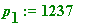

(the Euler phi-value of
n
), if I have time...
(the Euler phi-value of
n
), if I have time...
I would like to touch
briefly
on that
critical
"phi_n" (
my
notation above).
 - the Euler phi function - came on the mathematical scene through Euler's classic generalization of Fermat's little theorem (I have devoted an entire section of my web site - with my personal year-2001 homage-lecture to mark the 400th anniversary of Fermat's birth - to that classic theorem):
- the Euler phi function - came on the mathematical scene through Euler's classic generalization of Fermat's little theorem (I have devoted an entire section of my web site - with my personal year-2001 homage-lecture to mark the 400th anniversary of Fermat's birth - to that classic theorem):
Fermat's
little
theorem. Let
p
be prime, and
a
be any integer
not
divisible by
p
, then
 leaves remainder 1 on division by
p
.
leaves remainder 1 on division by
p
.
Euler's generalization of Fermat's theorem. Let
n
be any natural number (
, prime or otherwise), and
a
be any integer such that gcd(
a
,
n
) = 1, then
leaves remainder 1 on division by
n
(where
 is the number of integers between 1 and
(
) that share no common factor,
greater than 1
, with
n
).
is the number of integers between 1 and
(
) that share no common factor,
greater than 1
, with
n
).
Euler's beautiful formula for
.
 =
n
, where the product
is evaluated over the
distinct
prime divisors
, ... of
n
.
=
n
, where the product
is evaluated over the
distinct
prime divisors
, ... of
n
.
Two examples only:
1. When
n
=
p
, is
itself
a prime,
=
=
 ,
the '
,
the '
 '
of
'
of
Fermat's little theorem.
2. When
n
=
pq
, the product of two
distinct
primes,
=
=
 ,
,
the '
 ' of the RSA method.
' of the RSA method.
Maple has a command for computing
 (it requires loading Maple's Number Theory package; the items are alphabetically listed, and 'phi' is just after 'pdexpand')
(it requires loading Maple's Number Theory package; the items are alphabetically listed, and 'phi' is just after 'pdexpand')
> with(numtheory);
Warning, the protected name order has been redefined and unprotected
> phi(13);
> phi(15);
> phi(25);
> phi(12345678910987654321);
>
> p[1] := nextprime(1234);

> q[1] := nextprime(5678);
> n[1] := p[1]*q[1];
> n[1]*(1 - 1/p[1])*(1 - 1/q[1]); # Euler formula

> phi(n[1]); # Maple command
>
But what about, say:
> p[2] := nextprime(10^24 + rand()^2);
> length(p[2]);
> q[2] := nextprime(10^29 + 54321*rand()^2);

> length(q[2]);

> n[2] := p[2]*q[2];
>
Here NOW - I hope - you will see the difference:
> n[2]*(1 - 1/p[2])*(1 - 1/q[2]); # Euler formula
BUT FOR:
> # phi(n[2]);
the computation clock comes on... Maple
cannot
quickly compute
because - to do so - it needs to
factor
in order to find
and
 , to use Euler's formula to evaluate
, to use Euler's formula to evaluate
 , and here they have only 25 and 30 digits... That should explain to you
why
earlier I had to
define
'phi_nA'
(with the
known
values of pA and qA) in the RSA demonstration: Maple could
not
itself have carried out the computation had I used phi(nA)...
, and here they have only 25 and 30 digits... That should explain to you
why
earlier I had to
define
'phi_nA'
(with the
known
values of pA and qA) in the RSA demonstration: Maple could
not
itself have carried out the computation had I used phi(nA)...